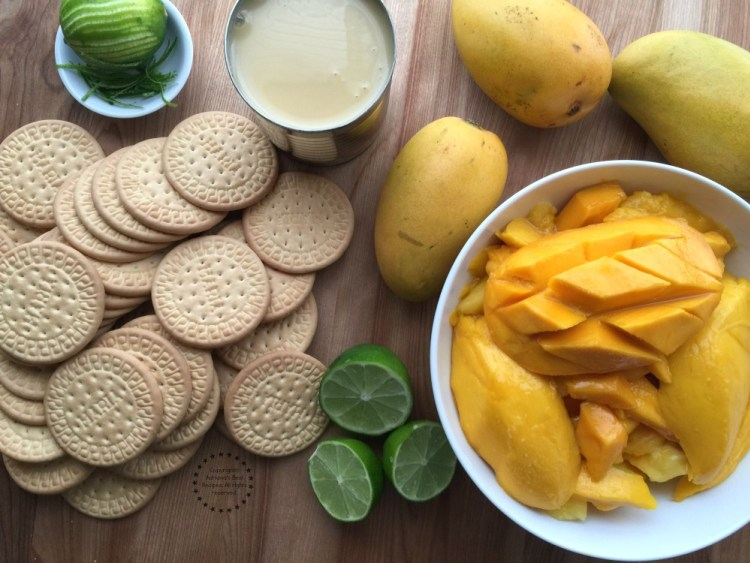
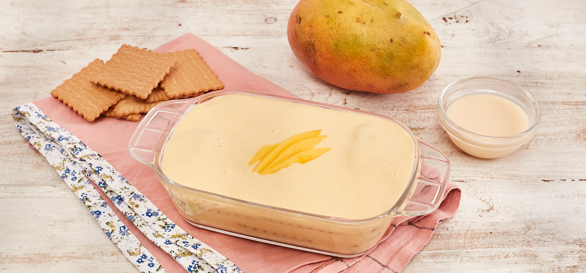

Postres sencillos y rápidos
Inicio
Pay
Carlota
Pastel
CARLOTA DE MANGO

Ingredientes
2 mangos en almibar para decorar
3 paquetes de galletas de canela
1 lata de leche condensada
1 lata de leche evaporada
1 taza de mango
1 paquete de queso crema
3 limones, el jugo
1 cucharada de vainilla
Preparación
LICUA la leche evaporada, la leche condensada, la vainilla, el jugo de limón, el queso crema y el mango; hasta que tenga una consistencia espesa.
AGREGA la grenetina hidratada en forma de hilo y licua.
PON en un molde una capa de galletas una capa de relleno de mango y así sucesivamente.
REFRIGERA la carlota de mango durante unas horas.
DECORA con el mango en almíbar y disfruta.

Beneficios de comer mango
Las vitaminas que contienen los mangos son ideales para mantenernos saludables y reforzar nuestras defensas para evitar cualquier enfermedad.
Los mangos tienen pectina, una fibra dietética que contribuye a reducir los niveles de colesterol en la sangre.
Si lo que necesitas es ganar peso, el mango te ayudara a lograrlo, ya que 150 gramos de mango equivalen a 86 calorías.
Los mejores postres para tí ¡recomiéndanos!
#Quédate en casa